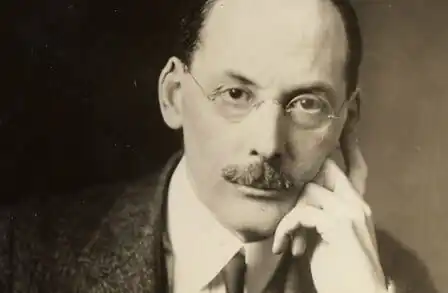

Едвін Арлінгтон Робінсон — американський поет, письменник і драматург. Триразовий лауреат Пулітцерівської премії.
Народився 22 грудня 1869 року в Гед Тайд, округ Лінкольн, штат Мен, США.
Молодший серед трьох братів, у юності він був закоханий у Едну Шепард, яка, проте, вийшла у 1890 році заміж за середульшого брата, Германа. Це було великим ударом для гордості юного поета, який, однак, у той час був замолодий, щоб серйозно конкурувати за руку Едни. Старший брат, Дін, який був лікарем, пристрастився до наркотиків і помер нестарим. Герман, зайнявшись господарством, також мав особистісні проблеми, пив і робив помилки, що врешті привело до розриву з жінкою і дітьми. У 1909 Герман помер від туберкульозу, після чого Една з дітьми повернулась до родинного маєтку Робінсонів у Ґардінері, штат Мейн. У віці 21 року Едвін вступив до Гарварду. Після смерті батька, не закінчивши навчання, повернувся додому в Ґардінер і намагався вести господарство на фермі. Він двічі пропонував Едні одружитися з ним, але після остаточної відмови переїхав у Нью-Йорк. Там він вів життя бідного поета, подружився з такими ж як і він письменниками, художниками і майбутніми інтелектуалами. Дебют Робінсона відбувся в 1896 році, коли він на власні кошти видав першу збірку "Потік і Попередня ніч" (The Torrent and The Night Before, 1896) і "Діти темряви" (The Children of the Night, 1897). У віршах цих збірок вперше згадується "столиця" поетичного світу Робінсона — вигадане містечко Тільбюрі-таун, де мешкають і герої його наступних збірок: "Містечко вниз по річці" (The Town down the River, 1910), "Людина на тлі неба" (The Man Against the Sky, 1916), "Три таверни" (The Three Taverns, 1920). Вів відлюдькуватий спосіб життя, так ніколи й не одружившись. Протягом останніх двадцяти років життя жив в Мак-Дауелл у штаті Нью-Гемпшир. Помер від раку 6 квітня 1935 року в лікарні Cornell Hospital у Нью-Йорку.